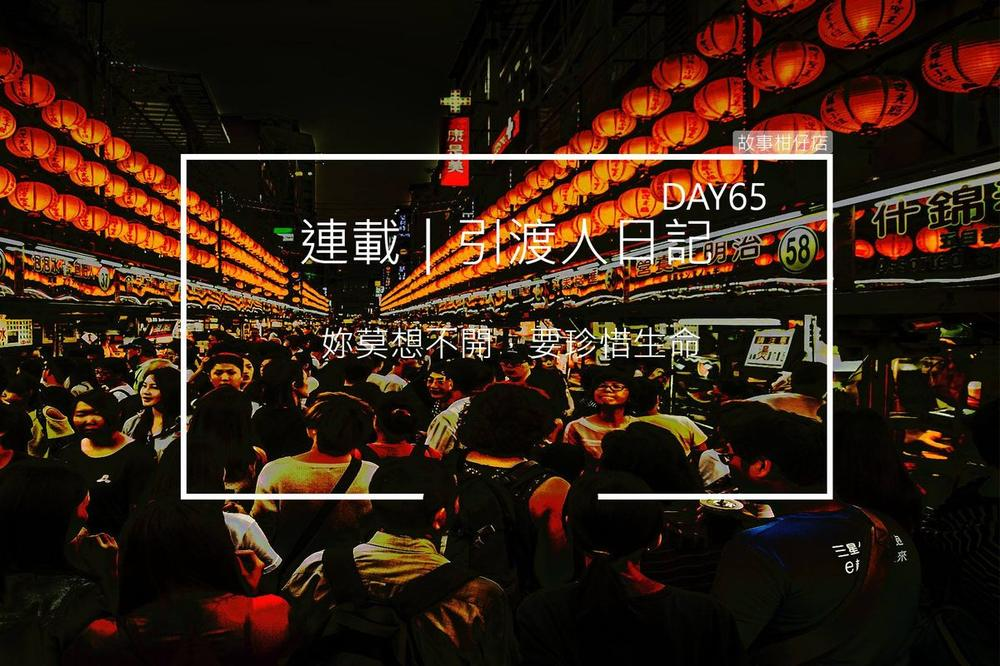
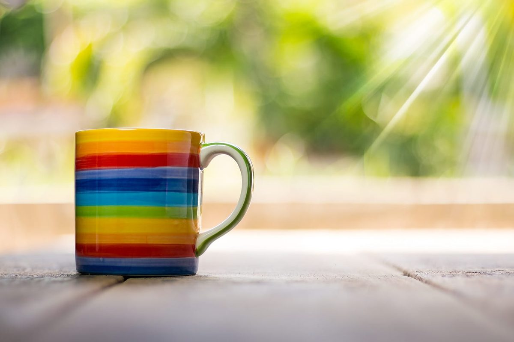
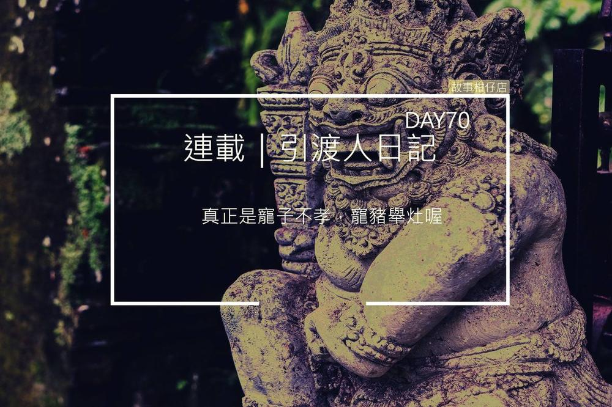
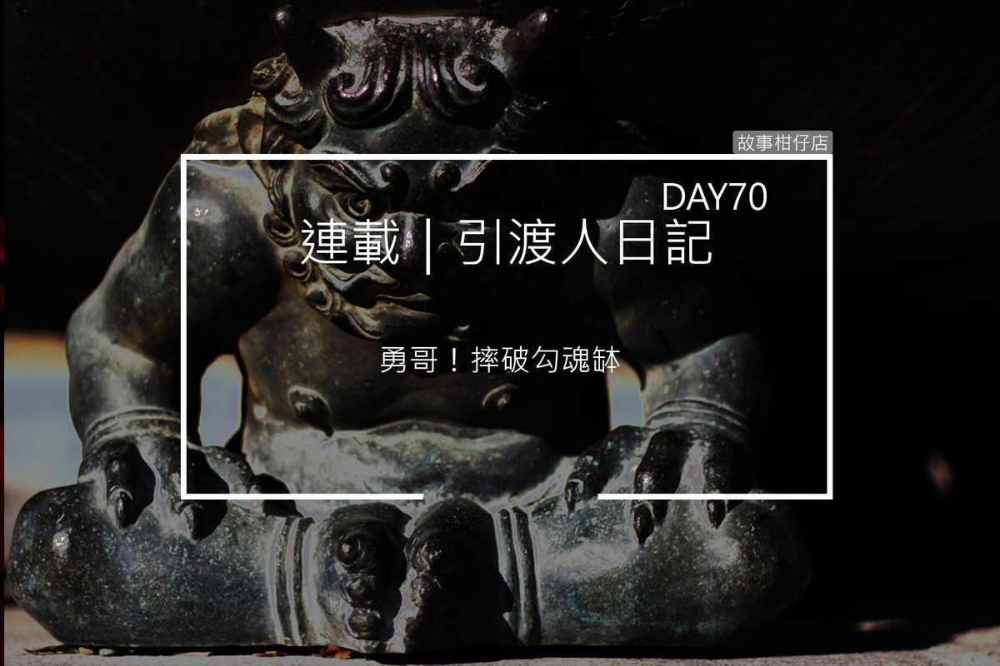
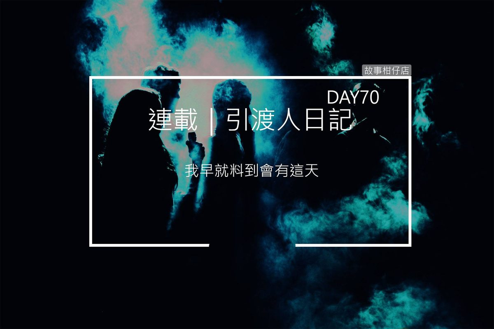
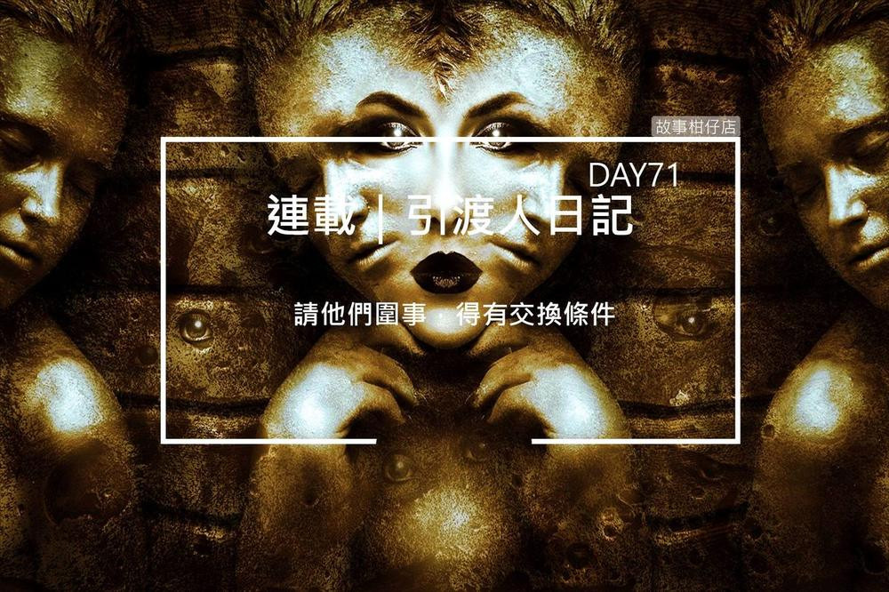
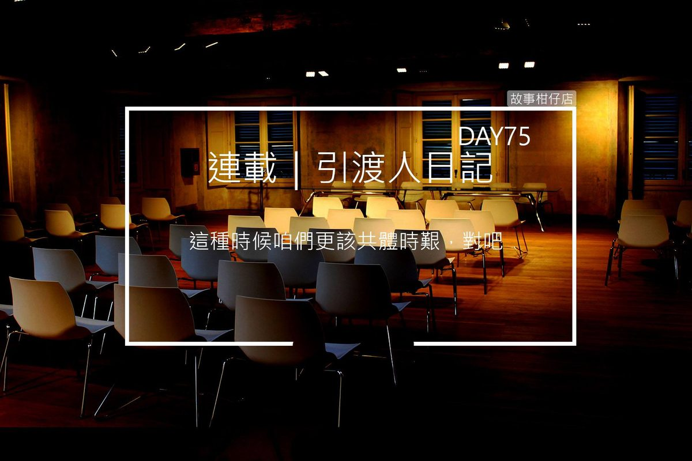
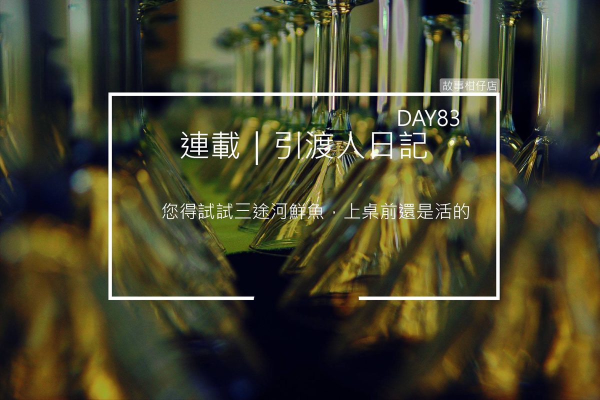
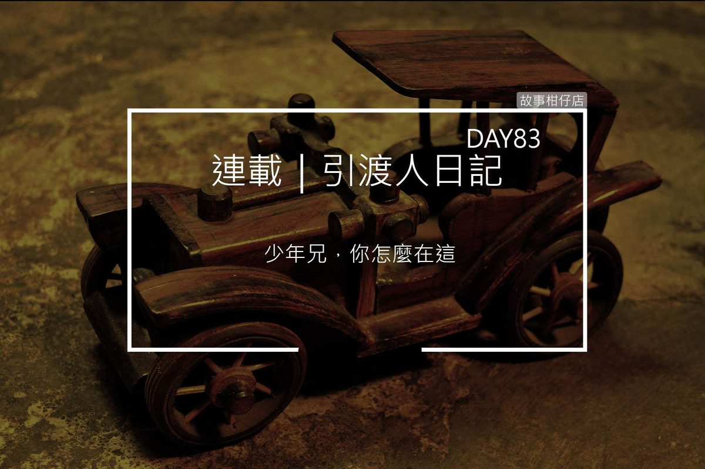
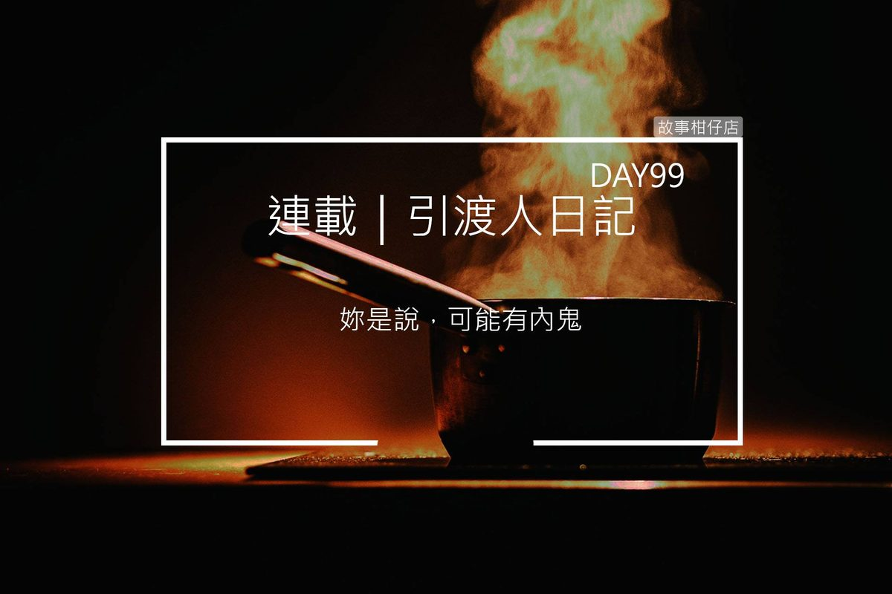

引渡人日記day 65（上） 好人做到底

難得的休假日，我才不想待在地府跟鳥嘴去健身，也不想跟鬼門關惡鬼喀唬爛，乾脆自己搭了順風公務車到陽間晃晃，逛個夜市也好。
鳥嘴很討厭夜市，他說人擠人，比地府還擠。我卻覺得夜市熱鬧，有吃有喝又有玩，很趣味。
買了杯木瓜牛奶，我四處走走看看，有時也覺得人生很奇怪，這些攤販看我跟平常人沒兩樣，有誰想得到我是個在地府工作的鬼差？說不定，到時候還是由我引魂。
遠遠的，我聞到一陣熟悉的香味，親像細漢控土窯。跟著香氣，我擠過QQ蛋、糖葫蘆、臭豆腐的攤子，原來是在賣烤蕃薯。
好像是準備收攤了，一個頭髮剃得短短、長得十分秀氣的年輕小伙子拿著抹布擦小攤車。
「少年仔，還有嗎？」我吞吞口水。
他看我一眼，「還剩兩條大的。」
啊喲，他的聲音柔柔細細，分明是查某囝仔，我竟然叫錯了。
「拍謝拍謝，我叫錯了，小姐，兩條蕃薯我都要。」
「沒關係，很多人都會認錯。」她遞來熱騰騰的紙袋，笑了一下。
正要掏錢，我突然發現她的脖子纏著一圈圈黑影。
啊！那不就是鳥嘴說的，準備自殺的凶兆嗎？！
這要怎麼辦才好？我總不能眼睜睜放她去自殺吧？這麼年輕的一個查某囝！
我想起黃小玲在饑渴廠受苦的樣子，實在不能就這樣算了。
「小姐，妳莫想不開，要珍惜生命。」哭夭，我居然就這樣講出來，技巧有夠爛。
她停下擦攤車的動作，向我伸出手，不太耐煩的說：「一共四十五塊。」
唉！怪我太笨！一定嚇到她了。鼻子摸摸，將銅板交到她手裡。
冷不防被後面人潮一撞，我的手便疊在她手掌上，雖然我很快縮回手，但那不到一秒的時間，突然聽見她抽抽噎噎的哭聲：
「媽，我想回家，我不是心理變態，我是妳女兒。」
我揉揉眼睛，她一臉不爽收妥零錢，哪有一滴眼淚？
我知道了，剛才聽到的，一定是她心裡的聲音。
嘩！想不到地府待久了，我也有這種超能力餒！不過，現在不是開心的時候，我得救她才行。
她戴起棒球帽，推著攤車劃開人潮往夜市尾走去，我偷偷跟在她後面，心跳乒乓睬。揣在懷裡的番薯熱熱的，第一次做這種事，好緊張。緊張到連聞到臭豆腐味都有點想吐。
沿路看到賣刈包，看到那肥滋滋、油亮亮的五花肉，真想買它五個！但現在不太適合，只能含淚道別，下次再來買。
熱鬧的燈光漸漸暗淡，人也少了許多，終於她走出了夜市，推著攤車拐進小巷裡。
我急忙跟了上去，她彎腰推車的身影突然停下，頭也不回的說：
「你跟著我幹嘛？」
哭夭，原來她都知道我在跟蹤。真見笑。
「我、我是要跟妳說，蕃薯很好吃。很久沒吃到這麼甜的。」我急忙拿起蕃薯，狠狠咬了一大口。
她回頭瞪了我一眼，一對淡淡的眉毛皺了起來。
「不要再跟著我，我對男人沒興趣。」
路旁野狗一隻一隻聚集起來，對著我吠個不停。哭夭，這些狗一定是因為知道我不是人。
「我不是那個意思，我只是想……」
「你這種人我看多了，連搭訕都不敢直說，沒種。」
這查某囝怎麼這麼青番？！
長滿癩痢、毛髮打結的野狗圍著我，露出白白的牙齒，像在警告我。
我到底幹嘛沒事找自己麻煩？！回宿舍睡覺比較實在。
那查某囝「哼」地一聲又推起攤車往前，纏著她脖頸的黑影似乎又更深、更緊。算了，好人做到底。嘆口氣，我避開野狗，跟了上去。
引渡人日記 day 65（下）只要真心，就該被祝福

那個查某囝猶原彎著腰推攤車急急往前走，我跟在後頭，不敢太快，又怕太慢會跟丟。
手機傳來明天引魂名單，一看，阿娘喂，一個下午得跑三個地方。
這樣不行，我沒那美國時間跟她耗。
「小姐、小姐！」我小跑步跟上去，拍拍她的肩。
「媽，我想回家。我不是心理變態，我是妳女兒。」
啊呀！這一碰，又聽到她心裡的哭聲。怎麼哭得這呢淒慘。
「夠了沒！我要報警了！」她惡狠狠瞪我，左手握手機，右手握著小刀。
正在跟客人打情罵俏的檳榔西施將我從頭看到尾，翻了個白眼，跟金髮男客竊竊私語，不時往我們這邊看。
要是真的鬧大，代誌就大條了。不管了，直接正面對決啦！
「小姐，妳要好好活著，不然妳媽媽會很傷心。」
聽到這句話，那查某囝瞬間呆了一下，卻又立刻變回恰北北的樣子，對我大吼：
「你到底是誰？是我媽叫你來說服我的嗎？！」
妥當了、妥當了！看她呆那一下，我就知道有講到重點！
「小姐，我不認識妳媽，但我想，妳媽一定也希望妳回家。」
夭壽，我到底是講到不該講的，還是講到重點中的重點？那查某囝的目屎突然親像水龍頭一樣貢貢流，都快把下嘴唇咬到流血了。
我怕路人以為我在欺負她，趕緊拉著她到便利商店外坐下，跑去買了杯咖啡給她。
「我媽說，我是心理變態，除非、除非我變正常，否則不准，回家。」她邊喘邊抽泣，可憐哪，哭到連話都講不好。原本抓得刺刺的頭髮變得亂七八糟。
本來想拍拍她，但男女授受不親，我還沒打算要娶她餒！只好趕緊又跑進超商抽幾張面紙給她，她往臉上胡亂抹了一陣，仍舊在哭，我就坐在旁邊聽她哭。
好不容易，她的哭聲慢慢平靜下來，兩眼無神望著前方，鼻頭哭得紅紅的。
「那、那妳就變正常啊，這樣就可以回家了。」我好想趕快結束這回合，明天工作量很大餒。
「我是同性戀。」
蛤？什麼戀？
「同性戀啦。我是女生，但我也喜歡女生。」她低頭握著咖啡杯，不看我。
蛤，安捏甘好？女生就是要配男生啊，現代人實在是喔，有夠亂七八糟，兩個女生要怎麼逗陣？
當然啦，這些想法我是不敢講出來，等下她立刻跑去自殺怎麼辦？
可能是看我不講話，她苦笑起來：「看吧，你一定也覺得我是心理變態。」
「沒啦！我只是不曾聽過這種事。」我連忙搖手。
「其實我跟一般人一樣，會哭會笑，要吃要睡，只是剛好我喜歡的是女生而已。」
跟一般人一樣？啊，或許在她看來，我也是個一般人吧？誰想得到我是鬼？當鬼就算嘍，竟然還想著在陽間遇到阿香。
這樣想想，兩個女生逗陣也沒什麼大不了嘛。鬼去愛著人好像還比較變態，呵呵。我們地府也有夜叉在跟大小鬼聯誼相親的咧，聽起來不是更嚇人。
「你笑什麼？」她用手肘推推我。那種故意斜眼瞪的表情，實在是跟在這超商外來來去去的女孩子沒啥兩樣。
「沒啦，我只是想說，妳跟女生在一起可能比較好，現在很多渣男。」講到這我就有氣，騙財騙色的男人愈來愈多，地府都快關不下了。
「白癡喔。」她摸摸耳環，笑了一下，「欸，你剛剛說蕃薯很好吃，真的嗎？」
「真的啊！真正是我在陽間……不，這幾年吃過最好吃的。」
「那就好。我媽超愛吃烤蕃薯。我常在想，會不會哪天她來買，這樣我就可以跟她說，媽妳看，我很努力在工作生活，我很正常啊……」
說著說著，她將整個臉埋進雙膝，又哭了起來。
看她這樣哭，我也好想哭喔。一個好好的查某囝，只是想要被祝福，怎麼這麼困難？
就親像，我也很希望有人給我加油，跟我說總有一天會遇到阿香，總有一天會脫魯。
「妳要哭就哭。」我還是伸出手拍拍她，「別人怎麼想我不知道，但至少希望妳一生平安快樂。」
她拱著背，哭得更大聲了。細細的脖子好像要斷掉似的垂著，然而，原本緊緊纏繞的黑影居然漸漸消散。
她的後頸白白的，長著些細細胎毛。還哭得出來就好，還哭得出來就好。
➡前情提要看過來：
引渡人日記 day 70（上） 又來一個神棍

今天，我跟鳥嘴來到醫院引魂。
第一次來醫院，覺得這裡真是很趣味的地方！有康復了準備回家的大嬸，有正大量失血緊急搶救中的少年仔，有被醫生宣布呼吸心跳中止的阿伯，也有剛出生全身皺巴巴的嬰仔。
短短幾分鐘，由生走到死，再從瀕死走到重生，大概也只有醫院有這等光景。
按理來說，除非我們故意現形，否則一般人是看不到我們的。但是走過候診室時，有個坐輪椅的老人，用濁濁的眼睛打量我跟鳥嘴，一張凹癟的嘴咿咿呀呀想說話，口水卻先從嘴角流了下來。
唉，我看他也時日無多了。
「到了。」
鳥嘴停在一間走廊盡頭的病房外，我們直接穿過房門進去，夭壽大的病房裡只有一張床，躺著頭髮白蒼蒼的老先生，跟我們地府餓鬼差不多瘦，嘴唇發紫，眼睛緊閉，臉上罩著一堆東西，旁邊還有一堆機器。
床邊圍著三個中年男子，剛好是大中小三種體型，彼此都不講話，皺眉低頭滑手機，整間病房只剩機器規律的聲音。
如果說這裡是飯店我也相信，有沙發、微波爐、超大液晶電視，阿娘喂，連廁所馬桶都還有洗屁股的設計。這一定是有錢人家，難怪不用像死老百姓要三個人擠一間病房，連拉屎都要排隊。
「坐吧。時間還早。」鳥嘴拍拍角落的沙發。
有錢人的沙發就是不一樣！坐起來軟綿綿、膨塞塞，比我宿舍的床還舒服。
床邊傳來訊息的聲音，頭頂微禿的老大站起身，很嚴肅的說：
「我朋友介紹了一位師父，說老爸是元神跑掉才沒意識，他可以馬上趕過來救老爸。」
「別再折磨老爸了好嗎？他都這樣多久了？醫生也說這樣很痛苦。」將polo衫紮進高腰褲的老中立刻回嘴。
「你也太不孝了，要我眼睜睜看老爸送死？我辦不到！」老大激動了起來，幾根稀疏頭髮掉到額頭前，他氣呼呼地掏出梳子梳回去，卻愈梳愈亂。
「我怎麼從來不知道你這麼孝順？平常在美國連通電話都不打，聽到老爸病危還不是立刻來醫院，而是問律師遺囑立好沒！」老中雙手緊抓著高腰褲頭，深怕一生氣，褲子就會整件掉下來似的。
「你們吵夠了沒？可以讓老爸安靜休息嗎？」唐裝打扮、頂著西裝頭的老小忍不住低吼。嘿，我說人類實在是不知在想啥，明明是你老爸在等死，你沒事穿個壽衣幹嘛？
不管老人就躺在正中央，這三兄弟就吵了起來，要聽懂他們在吵啥一點都不困難，連我這種古意人一聽就知道：老爸還沒寫好遺囑，財產還沒分配好，怎麼能死！
「真正是寵子不孝，寵豬舉灶喔！老爸都快死了，居然在吵這個。」我隨手開了包捲心酥，邊吃邊看戲。
「接下來你會看到不想看。還有一刻鐘，再等一下。」鳥嘴連坐沙發都挺著腰桿，只坐椅面1/3。
這種捲心酥真正不錯吃，突然很想配孟婆賣的咖啡。咖啡這東西哦，有夠奇怪，第一次喝覺得苦，後來居然會想念。我打算今天任務結束，就來去買一杯大杯的來喝。
「碰！」病房門突然被打開，一個穿著紫色絲質長袍的男人緩步走進，他右手拈佛珠、右手背在背後，胸前掛著檀木條串成的項鍊，長得斯斯文文。
「我是開天禪師，聽聞葉老先生性命垂危，受葉天保先生之託，來此召回葉老先生元神。」紫衣男用他小小的眼睛環視全場，一點都不怕生。
哭夭，他來召回元神，那會不會影響到我們引魂啊？拜託喔，我可不想再惹什麼麻煩。
一直坐得直挺挺的鳥嘴突然往後一躺，雙手抱胸，冷冷笑著，「又來一個神棍。」
引渡人日記 day 70 （中）神棍顯神威

神棍？我只聽過光棍，沒聽過神棍。
「簡單來說就是騙子。人脆弱之時、徬徨之時、貪念之時、起惡之時，最容易上當。你看看就知道。」鳥嘴好整以暇，雙手交握放在膝上，像等著一場好戲。
禿頭老大迎了上去，向紫衣男介紹道：「師父，這是我弟弟天送、天養，我爸爸就麻煩你了。」
「別胡鬧了行不行？誰知道你什麼來歷？」高腰褲天送瞪著紫衣男，咄咄逼人。
「你不信便罷，我這就離去。」紫衣男轉身就要推開門，腳步又停了下來，「葉老先生元神逸散多日，但他雙拳緊握，代表他尚有一魂一魄維持著生命。如此強韌，恐怕是有未盡之言。」
「天送，你就讓師父試試看，沒有損失。」禿頭天保說。
「算了，哥，什麼方法我們都試試。只要沒有危險性就好。」壽衣天養也跟著勸。
好說歹說一陣，高腰褲天送妥協了。
紫衣男燃香化咒，結纏手印，佛珠一顆一顆撥，台詞一句一句念：
「葉黃土，己丑年八月二十一日生，元神遊蕩不得歸家，還請皇天后土、四方天兵神將幫忙……」
看到他那副認真的德性，我實在是忍不住繞到他身後，扯扯他的頭髮、彈了彈佛珠，還拉起他的檜木項鍊聞了一下。嗯，真香！想必貴鬆鬆。
鳥嘴瞧瞧手錶，站了起來，我知道這代表引魂時間到了。
葉老先生的魂魄正緩緩坐了起來，離開病床上的肉體。
此時，紫衣男又點燃二十四支香，將香腳抵在葉老先生前額，唸道：「天靈化開，三魂七魄，少魂缺魄，速速回來！」
「神棍。」鳥嘴不屑地撇了下嘴角，打開黑傘就要收亡魂，卻有幾綹煙霧從門縫溜了進來。
那幾綹煙霧突然幻化成紅橙黃綠藍靛紫七個惡鬼模樣，臉上分別露出各種奇怪的表情，有的笑、有的哭、有的生氣，他們手拉著手圍著亡魂，露出黑牙高聲尖笑著，不讓亡魂跟我們走。
「糟了。」鳥嘴連忙抽出引魂幡往地面一捅，幡旗一分為二把大刀，他交叉雙手甩起大刀，直往惡鬼勾黏的手砍下。
阿娘喂，這什麼情形？不是說紫衣男是神棍嗎？怎麼叫來這群凶神惡煞？
同一時間，病床旁的機器螢幕出現起伏，葉家三兄弟不可置信地喊：
「老爸、老爸要醒了嗎？！」
「勇哥！摔破勾魂缽！」
鳥嘴一聲令下，我遲疑一秒，將缽狠狠摔破，碎片竟化為千萬顆尖利牙齒，像密密的雨滴直線往七色惡鬼射去。遭擊中的惡鬼淒厲慘叫，卻仍牢牢圈著亡魂，那亡魂只是呆呆望著三個兒子。
紫衣男還在做法，葉家三兄弟仍為老爸的生命跡象開心著，絲毫沒感覺到身邊正在開戰。
七色鬼之間像是強力膠一樣，砍了又再生，融為一體，難以切割。甩著大刀的鳥嘴滿身大汗，冷不防被七色鬼其中之一狠狠咬住肩膀。
「哈哈哈，好開心、好好玩、好興奮喔～！」那惡鬼齜牙咧嘴，發出高亢的笑聲。
「嗚嗚……你咬到他了，我好傷心啊……」其中一個愁眉苦臉的惡鬼哭了起來，雙腿不斷往鳥嘴身上踢蹬，像個正在耍賴的死小孩。
幹，這幾個鬼怎麼這麼變態，到底在演哪一齣？！偏偏這裡不是地府，沒有鎮暴部隊可以幫忙，鳥嘴又身受重傷，到底該怎麼辦？！
「勇哥，傘……」鳥嘴肩膀滲出血跡，顫抖著手指向剛剛丟下的黑傘。
傘？要傘做什麼？
不管了！我緊閉眼睛，抄起傘往惡鬼跑去，用吃奶力氣奮力一刺。
引渡人日記 day 70（下）情極必狂

原本鬧哄哄的病房，突然安靜了下來。七色鬼的哭叫、怒吼跟尖笑都消失了。
我偷偷睜開眼，發現撐開的黑傘變得好大好大，自己轉了起來，傘骨閃著耀眼金光，折射成八角形將七色鬼牢牢框住。仔細一看，那光束中竟飄滿密密麻麻的經文。
「趁現在！」鳥嘴按著血流不止的肩頭，縱身一躍跳進八角形，硬是將亡魂拉了出來。
這一拉可不得了哇！病床上的老人瞬間彈了好大一下，氧氣罩都給震歪。
「老爸！老爸！」葉家三兄弟齊聲大喊，禿頭天保立刻上前握住老人的手。
「爸，快醒來呀，您不是有話還沒說嗎？」
「爸！您記不記得，您曾說您最疼我嗎？」
「爸！房子我可以不要啊，但股票您得交給我呀。」
幹，這三兄弟根本想錢想瘋了，什麼鬼話都講得出來！
紫衣男用食指及中指夾起一張符咒揮舞著，右腳跺地三次，大喝一聲：
「葉黃土元神歸位！」
歸！歸你老母啦！再不走，就趕不上公務車了！
亡魂睜著混濁的眼珠，喃喃自語道：
「有話還沒說？喔……對，忘了告訴你們，我的房產、股票全捐了，這是菩薩的指示啊……」
靠北喔！不早講，還搞了這麼一齣。雖然現在講，你兒子也聽不到。
我一手勾住亡魂，一手攙扶鳥嘴，趁著七色鬼還動彈不得時離開。
病房門關上之前，隱隱約約聽見葉家三兄弟哭喊著，老爸啊，話講清楚再走啊！
有夠失德！老爸都死了，兒子卻只擔心遺產怎麼分，真正是天打雷劈！
狼狽不堪上了公務車，鳥嘴看看錶，這才鬆了一口氣，說出那七色鬼的來歷。
原來，那七色鬼分別代表喜、怒、哀、樂、貪、嗔、癡，所以他們才會有的哭、有的笑、有的氣噗噗。這七色鬼都歸一名「狂」的惡鬼管轄，他們自稱為「八仙」，不受天庭或地府約束，時常趁虛而入搶奪亡魂。去問一問資深的引渡人，八成都遇過這幫狂徒。
驚死人，我這小菜鳥居然碰上這種角色，幸好有鳥嘴在，而且，真想不到我們的傢私這麼厲害！
「我早就料到會有這天。」鳥嘴撫著傷口，呼吸愈來愈急促。
他告訴我，當年他擔任引渡人時，便與「八仙」交過手。這次重回舊職，他早就將引魂工具動過手腳：引魂幡藏的大刀，是用數萬支左小腿骨打磨而成；勾魂缽射出的牙齒，從地獄孽魂的口中拔來；至於最帥的黑傘，嘖嘖嘖！可是用東嶽大帝的鬍鬚編成傘骨，難怪這麼威猛！
「好厲害啊，跟著你就妥當了嘛！」我真心讚嘆，如果是跟正義哥出任務，結果一定不一樣。
「別高興太早，今天只是先拖住七色鬼，若狂鬼早來一步，我們未必有勝算。」
「怎麼可能，我們武器這麼厲害，還有東嶽大帝加持。」
「勇哥，你想狂鬼為何能管住七色鬼？喜極、怒極、哀極、樂極、貪極、嗔極、癡極，最終皆狂。無論人、神、鬼、妖，只要到了『狂』的境界，便最難對付，任誰都不敢大意。」
這麼一大串，我似懂非懂，只好點點頭。不知為何想起臭臉白姐，如果是她，也沒把握打贏狂鬼嗎？
是說，狂鬼他們拼死拼活來搶亡魂幹什麼？
正想再問問鳥嘴，卻見他嘴唇發白，頭歪靠著痛昏了過去，整件襯衫都被染紅。不得了，待會得趕緊送往醫護室才行。
車窗外夕陽照得遍地金黃，連雜草都閃著金光。
老先生突然整個人貼到窗面，看著染成橘紅色的天邊。
「多謝菩薩指示啊，我要來去西方極樂世界嘍……」
引渡人日記 day 71 受傷愛用珀脂膏

鳥嘴躺在醫護室裡，上半身纏滿人皮繃帶，眼睛閉得緊緊，一動也不動。
要不是我們早就是鬼，我還真擔心他死了。
以前只知道鳥嘴胸肌大，現在裸著，才發現繃帶沒遮住的皮膚，有好幾條長長的疤。這傢伙到底經過什麼事啊？我光是車門夾到手指就痛到飆淚了。
「還沒醒嗎？」一抹白影飄了進來，是白姐和黑哥。
我搖搖頭。黑哥安慰我，說沒事的，估計再三個時辰就會醒，他也替鳥嘴申請了保險。
白姐從懷中掏出一罐黃油油的「珀脂膏」，等鳥嘴醒來後，要我幫他擦在傷口上。
「這是從刮脂地獄搜集來的脂肪做成的藥膏，上等貨。」黑哥比出大拇指，真情推薦。
也太噁心了吧，哪門子藥膏啊！
「皮肉問題好解，被七色鬼咬傷，難的是毒，只能以毒攻毒。」
我詳細報告昨天的狀況，黑哥氣得又是跺腳、又是插腰，白姐手撐下巴，一句話都不說。
「阿白，你說這八仙是不是愈來愈囂張？！再這樣下去不行呀，治得住狂鬼的引渡人沒幾個，難不成每次都要我們出馬？」黑哥急到草帽都歪了。
「白姐，妳跟狂鬼交手過呀？誰贏誰輸？」我忍不住插嘴提問。
「輸了我還在這當你頂頭上司？」白姐狠狠瞪我一眼，嘆了口氣，繼續說道：
「李勇，聽清楚他們的來歷，你以後勢必會再碰上他們，務必當心。」
簡單說，「八仙」就像是黑道幫派，不受天條地法約束，時常搶奪亡魂，逼他們加入陣營，壯大聲勢。
「抓這麼多人幹嘛，又不是要選總統。」我碎念道。
「犯傻呀？有人的地方就有買賣，這點事也想不通。」
白姐鼻孔哼了口氣，繼續說，八仙聲勢愈壯大，便更能引來心術不正的人類。有些神棍或走偏門的修行者，不忌陰陽是非，找上八仙合作，只為了獲取利益。
難道……？
「沒錯。你們引魂時所見的紫衣神棍，恐怕就與八仙有往來。他令七色鬼拘住亡魂，為的就是讓亡者短暫返陽，好從家屬那裡大撈一筆。」
「咳、咳……」昏睡著的鳥嘴咳了幾聲，慢慢轉醒，看見枕頭旁的珀脂膏，皺了皺眉頭。
哇靠，這什麼體質，不是說得再三個時辰才會醒嗎？
「哎喲，醒啦！不愧是鳥嘴，幸虧有你，才免於被八仙得逞啊！」黑哥興奮地拍了下鳥嘴。我感覺得到，鳥嘴很痛。
「不，只是剛好在狂鬼現身前脫身。」鳥嘴沒有一絲高興，很嚴肅的繼續說：
「我看這次的神棍道行尚淺，連經文都念錯，居然也請得動七色鬼。看來八仙真的愈來愈沒分寸。」
「呸！他們本來就不是啥好貨，只要有利益，連隻豬都請得動他們！」黑哥憤憤啐了下口水，想想不妥，又蹲下將口水擦掉。
什麼利益？我實在是聽得霧煞煞。按照他們這麼說，誰都請得到八仙，那八仙好像也沒這麼厲害嘛。
「說你笨，我一點都不會於心不忍。」白姐伸出手指推了下我的太陽穴，「你當八仙吃素的？請他們圍事，得有交換條件。」
我幫鳥嘴擦上臭臭的珀脂膏，隨口問：
「那，交換條件究竟是啥？」
引渡人日記 day 75 地下會議

鳥嘴休養的日子，白姐黑哥不敢大意，擔心我一人出任務又遇八仙，乾脆先回去打雜一陣子，等鳥嘴康復再說。
也好，這陣子發生這麼多事，心好累。
黑哥交代，今天要開會，要我去端茶遞水跑跑腿。最後還叮嚀我，可別遲到了，各殿閻王都會到場。
來地府工作也兩個多月，有些閻王我還沒見過咧！才剛入夜，我穿得整整齊齊到東嶽山腳的大殿報到。
空調開得很冷，牛頭雙手抱胸打著盹，馬面嘀咕著wifi永遠這麼慢，其餘大小鬼、夜叉坐在外圍，各自盯著手機沒人講話。
白姐挾著股香風閃了進來，一身純白洋裝像朵茉莉；黑哥入座，摘下草帽，與白姐研究起準備好的會議資料。
殿內刮起陣陣陰風，守門大鬼扯著喉嚨喊：
「第五殿閻羅天子、十殿輪轉王，到––！」
閻羅天子有著一張黑漆漆的臉，露出白蒼蒼牙齒笑著，一進殿裡便吆喝：「辛苦辛苦！百忙之中抽空來開會，我跟孟婆訂了飲料，邊喝邊聊。」
輪轉王的模樣嚇人多了，他居然有兩顆頭、四隻手腳，但只有一具身體，就像兩個人硬塞在一件衣服裡。其中一張臉，眼尾下垂，法令紋深得像刻出來的，看起來很歹逗陣；另一張臉氣色紅潤，讓那對下垂的眼尾看起來慈悲又和善。
真趣味，一模一樣的五官，居然感覺差這麼多。
待他們坐好，我連忙端上彼岸花蜜茶，同一時間，孟婆也差遣小鬼送來飲料。
「歹勢啦～我沒遲到吧？！」
一位穿著金絲旗袍，燙著大波浪捲髮、塗鮮紅唇膏的女人，踩著高跟鞋闖了進來，一屁股坐在閻羅天子旁。
悄悄問了隔壁的夜叉，原來這女人是第二殿楚江王。真想不到閻王也有女生！看來我們地府真的很平等，女生不一定只能煮飯帶小孩。
「其他各殿業務繁忙，我們先開始。」閻羅天子問，「你們有什麼事要報告？」
此話一出，牛頭馬面、大小鬼及夜叉很有默契地低下頭，很認真地研究資料。白姐站了起來，將一疊厚厚報告書遞上去，說：
「本小組引渡人鳥嘴因公受傷，申請職災理賠卻遭拒，理由是什麼？」
閻羅天子戴上老花眼鏡，瞇著眼翻了翻那一大疊報告書，傳給輪轉王看看，再交給楚江王翻翻。他們根本就沒認真看嘛。
「遇到危險，不在第一時間請求支援，自己莽撞行事，受了傷卻要公司負責。這，似乎說不過去啊。」閻羅天子黑白分明的眼睛轉啊轉，在那張黑漆漆的臉上特別明顯。
恁娘勒，啥米莽撞行事？惡鬼都要索命了，難道還跟他泡茶講道理？！我們可是在為公司賣命餒！
「鳥嘴當下判斷請求支援也來不及，才選擇獨力奮戰，最後也成功引回亡魂，我不明白他有什麼不對的地方！」白姐氣到臉都漲紅了，黑哥在桌面下踢了她好幾腳，暗示她冷靜一點。
「好、好、好」楚江王示意要白姐坐下，將報告書交給身後文判，「報告書我們會再詳細討論。還有其他事要報告的嗎？」
楚江王端起彼岸花蜜茶，她的長指甲修得整整齊齊，塗上深深的紫色。
沒人答話，輪轉王打了個哈欠。
「請資訊部盡快更新『勾魂去誰家』app，已經害我屬下好幾次勾錯魂！」
阿娘喂，又是白姐。她真的有夠好膽。
「不是公司不願意更新，主機老舊，汰換又是一大筆錢。近期陽間講環保不燒紙錢，公司盈餘愈來愈少，各殿經費都削減了，這種時候咱們更該共體時艱，對吧？」輪轉王苦著兩張臉說。
白姐咬著下唇，握緊拳頭，白羽扇差點被捏爛，黑哥都快將她踢到瘀青了。
閻羅天子趕緊打圓場：「我會盡快報告董事會，盡快撥預算更新主機。」接著，吩咐身後文判紀錄此事。
「先這樣。」閻羅天子摘下老花眼鏡，「待會還有兩百多條魂報到，你們去忙吧。」
話還沒說完咧，白姐氣得扭頭就走，其他人也紛紛告退。剩下我，還得收杯子，跑不了。
閻羅天子嘆了口氣：「這白無常什麼都好，就是脾氣太拗了點。」
輪轉王搖了搖兩顆頭，問：「下個月天庭神將來視察，設宴的事準備得如何？」
楚江王喝光蜜茶，連笑容都甜得跟蜜一樣，她伸出手往上指了指：「已經吩咐下去了。董事會通過設宴預算無上限，可得讓神將們賓至如歸啊！」
引渡人日記 day 83（上） 閻王吃辦桌

第一次看到地府這麼熱鬧！鬼門關結彩帶、各殿建築拉起燈泡串一閃一閃，奈何橋擦得亮晶晶，來往三途河的破船換成新遊艇，就連彼岸花似乎都開得特別鮮豔。
天庭神將要來視察就是不一樣，不只佈置得熱鬧滾滾，連平常脫褲懶到處跑的大鬼小鬼，都整整齊齊穿上襯衫西裝褲。包括我，也第一次穿上燕尾服，外套後拖個長長尾巴，嘿，看起來真有派頭，雖然我只不過是負責遞茶水、收盤子。
日頭還未落呢，第十殿附近的寶殿便開始忙進忙出。數萬根刮脂蠟燭全部點燃了，照得整個殿內彷彿白天。一大張鋪著潔白桌巾的長桌，正中央放著一顆插著鮮花的頭骨裝飾；旁邊一整區的好料，有三途河鮮魚、奈何橋木燻肉、香灰麵包、血脂抹醬，還有整桶整桶的孟婆咖啡和高粱58度c喝到飽。夭壽，看得我都餓了。
殿內響起低沈號角聲，我趕緊跑到外面準備，居然看見白姐一臉大便斜倚門邊。
「白姐，妳怎麼在這？」
「臨時被調來當保全。」白姐雙手抱胸，瞟了寶殿內一眼，「高官視察，連我們這些主管都得來打雜。」
實在是沒空跟白姐聊太多，一聲鑼響炸開，整個寶殿好像都隨著震動起來。
門口整排穿著全白西裝、將體毛梳得服服貼貼的夜叉，同時彎下腰，手指緊貼大腿兩側，齊聲大喊：
「恭迎東嶽大帝––！！」
身穿金綢長袍的東嶽大帝一個大步跨了進來，他有著褐色皮膚，濃密鬍鬚長過膝蓋，手端煙斗，一對眼珠子像玻璃珠似的折射光芒，威風凜凜。跟在他身後的，則是南天門四大天王，各自拿著寶劍、寶傘、琵琶和龍蛇，目視前方，不看任何人一眼。
真難得！這還是我第一次看到十殿閻王同時出現哩。不是我在說，跟在東嶽大帝後，平常威風八面的閻王們變得好和善，臉上堆滿笑。
他們一就座，小鬼樂團立刻敲人骨琴、拍人皮鼓演奏音樂，我也趕緊端出陳釀彼岸花蜜茶，差點被長長的燕尾絆倒，掯！當帥哥原來這麼辛苦。
我小心翼翼，還有點發抖將茶放到東嶽大地面前，他看著我，微微點個頭，眼珠子閃過一抹光，嚇得我別過頭去。
「東嶽大帝及四大天王遠道而來，辛苦了，請好好享用餐點。招待不周，還請海涵。」閻羅天子的黑臉笑開一排白牙，招呼著大家。
打著領結的小鬼要為東嶽大帝上菜時，還被周圍的護衛擋下試菜，哇靠，這什麼派頭啊？
「您得試試三途河鮮魚，上桌前還是活的，只需加點蔥薑提味，鮮美極了！」楚江王笑吟吟夾了塊魚肉，水晶耳環在臉邊晃呀晃，她今天的口紅好像更紅了。
東嶽大帝沒動筷，啣住煙斗，輕輕擺擺手，居然就搧出一股清風。
見著他的指示，四大天王立刻嘻嘻哈哈到了自助區，高粱一桶接一桶喝。
「座上是拘謹了些，自在就好，自在就好！」閻羅天子有點尷尬的笑。
菜一道一道上，我也沒閒著，誰杯裡空了，我就得去斟茶。奇怪的是，東嶽大帝啥都不吃，只抽煙斗、喝茶。欸，不吃我幫你吃啦，看得我好餓喔。
主管聚會真的很無聊，聊的都是公司營運、未來展望、預算提撥、亡魂數量控管，都沒有八卦可以聽。站在桌邊的護衛個個面無表情，他們一定也很無聊。
不要說他們，我猜東嶽大帝也想回家，要不怎麼會閻王們說了一百句，他頂多只是點點頭？
「本年度轉劫所統計共兩百五十一萬三千六百八十四條亡魂順利投胎，相較於去年投胎率成長了1.78%，這都得歸功於同仁齊心協力，期盼明年地府運作能夠更順暢。」輪轉王兩張臉笑得可開心了。
「輪轉王，這話太見外了，我們都是在同一條船上的呀！應該是感謝東嶽大帝的督導，地府才年年榮景啊！」第六殿卞成王舉起杯子，其他閻王也紛紛舉杯。
一臉酷帥的東嶽大帝拿開叼在嘴邊的煙斗，將茶一飲而盡，什麼話都不說，只有那對眼珠子不斷反射出刺眼的光芒。
引渡人日記 day 83（下）內憂外患

實在捉弄人，明明啥都沒吃，肚子居然痛了起來！
趁著又斟滿一回茶，估計再十分鐘才會用上我，打定主意跑去解放，否則待會拉了一褲子屎，還要做人嗎我？
才剛偷偷摸摸溜出寶殿，遠遠就瞧見一個略駝背的身影蹣跚走來。哎呀！那不就是前陣子我引魂回來的阿嬤嗎？！怎麼只有一個人？一定是鬼差又開小差去了。
遠遠的，阿嬤也瞧見了我，開心地喊著：「少年兄，你怎麼在這？」
「噓！小聲一點。」我不過想去拉個屎，別這麼大聲嚷嚷啊。
「少年兄，我要去投胎了，可是我不想喝孟婆湯。你教我怎樣才能不喝湯好否？」
夭壽，肚子好痛，我真的快憋不住了。白姐去哪了？怎不來幫我解圍？
我一邊敷衍著，想將阿嬤推遠一點，沒想到腸胃一陣翻攪，阿嬤就趁我不注意，自己闖進了寶殿。
「恁在辦桌呀？歹勢啦，我想要問一下，咁有不喝孟婆湯就去投胎的方法？」
完了。
演奏音樂嘎然而止，十殿閻王與東嶽大帝同時看向阿嬤，輪轉王夾菜的手還停在空中，現場只有南天門四大天王依舊喝得渾然忘我。
我上前拉住她也不是，烙跑也不是，只好躲在門邊，寶殿內其他人也不敢妄動。
「哪裡來的亡魂搗亂？！白無常！妳這保安怎麼當的？！」楚江王尖起嗓子嚷了起來。
「抱歉，我一時大意，還請閻王恕罪。」白姐飛奔進來，臉色慘白。這還是我第一次看到她這麼慌張。
「大人啊，莫怪她，是我自己看這裡人多才跑來。我不想喝孟婆湯，不想忘記阮阿孫，恁看，這是我阿孫的玩具。我拜託你們，告訴我怎麼辦好不好。」
啊！是引魂當時我塞在阿嬤手裡的玩具車！
這阿嬤真是向天借膽，居然往東嶽大帝走去。算她識貨，知道誰是老大。
「啪！」
還來不及靠近東嶽大帝咧，護衛一掌就將玩具車打得老遠，不偏不倚就掉在我腳邊。可惡，有需要這樣對待一個老人家嗎？
「我看，準是去投胎路上迷了路。沒事、沒事，帶回去即可。」閻羅天子又連忙打著圓場。
「沒事？我說閻羅，你這圓仔也搓太兇了。今天是亡魂誤闖，萬一是有心作亂怎麼辦？」第七殿泰山王冷哼一聲。
「恁莫吵架，我走就是了。」阿嬤轉身走了兩步，驚喊：「阮阿孫的玩具車呢？」
「地府是妳來去自如的地方？白無常，還不趕快把她押下去，罰入畜生道！」楚江王氣到粉都快裂開了。
「該投胎往何處，都經過十殿縝密審判，豈可意氣用事決定她的下輩子？！」白姐挺起身，不甘示弱回嗆。水喔，我就知道她一定忍不住。
「意氣用事？！妳好大的膽子，居然這般頂撞我！」楚江王張開血盆大口怒罵。
愈聽愈不爽，我憋著一肚子屎，夾著屁股走到阿嬤身邊，將玩具車塞到她手裡。
「玩具車在這，收好。」我忍不住瞪了楚江王一眼。
打從進門後從沒開口的東嶽大帝乾咳兩聲，徐徐走到阿嬤面前，眼珠閃了兩下，對白姐說：「帶下去吧。」
他講話聽起來有好幾個人的聲音疊在一起，很渾厚又低沉，實在有夠性格。
白姐正要拉走阿嬤，只見一個夜叉卻連滾帶爬衝了進來，雙唇發紫、全身顫抖地大喊：
「報告大人，不好了！八仙闖進地府，方才在奈何橋擄走了二十幾條亡魂！」
我發誓，我真的聽見十殿閻王同時倒抽一口冷氣。恁娘咧，這八仙太超過，居然直接跑來地府搶魂，擺明了挑釁嘛！
「這麼放肆啊……」東嶽大帝將煙斗送進嘴裡，閉上眼睛很享受地吸了一口，隨即狠狠睜開雙眼，那對眼珠射出如刀劍般鋒利的光芒，長過膝蓋的鬍鬚怒張起來，就像隨時要射出的箭。
他舉起右掌重重拍下，桌面的碗盤全彈跳起來，碰到屋樑才又掉了下來，整座寶殿晃得比五級地震還嚴重，數萬根刮脂蠟燭東倒西歪，燃成一片火海，包圍著這座氣派雄偉的寶殿。
「究竟是我太好運，湊巧見識地府的維安漏洞；還是正因為我前來視察，才讓狂徒有機可趁？」
這次東嶽大帝的聲音聽起來像是有好幾百個人疊在一起，十殿閻王沒人敢出聲，白姐早就跑了出去追八仙。而我，肚子還是好痛啊……。
引渡人日記 day 99 歲末吃火鍋

真沒想過，地府工作也有這麼清閒的一天。現此時我居然和白姐黑哥窩在業務部辦公室吃火鍋，才剛康復的鳥嘴也來插一腳。整間辦公室空蕩蕩的，只有我們四個。
天氣冷，吃熱騰騰的火鍋真是爽，黑哥不知道哪生出來的麻辣鍋底，配鴨血豆腐，好吃到連舌頭都快吞下去。
「這魚丸好有彈性，都可以拿來打乒乓了。」黑哥吃得人中都是汗，又下了一碟鴨腸。「阿白，多吃點，別想這麼多。」
白姐那碗湯，喝不到一半呢。她拿著筷子在碗裡攪啊攪，心事重重的模樣。
鳥嘴和我使了個眼色。白姐不講，我也猜得到她在煩惱啥。
東嶽大帝視察後隔兩天，上頭就頒布人事異動命令，原來是十殿閻王決議，派兩名空降上司協助管理業務部。以前所有引渡人都歸黑哥白姐管轄，現在呢，剩不到十組，其他組別都歸新上司了。
通知書寫得好聽，說是為了減輕業務部負擔，但明眼人都看得出來，根本是架空白姐黑哥。
我想起設宴當天，楚江王那惡狠狠瞪著白姐的樣子，這餿主意一定是她提的！
連我們這些還歸白姐黑哥管的引渡人，業務量也少了好多。本來一天得引四、五個魂，現在兩天搞不好還沒有一個喔！這個月獎金一定很淒慘，唉！
閒到發慌，我們每天只好烤烤肉、泡泡茶、煮煮火鍋，黑哥還提議乾脆下禮拜來烤蛋糕殺時間。
「阿白，蛋糕想吃什麼口味？巧克力？還是重乳酪？」黑哥邊嚼著大腸頭，邊開始列購物清單。
「你不覺得這整件事很詭異嗎？」白姐若有所思。
「烤蛋糕嗎？不會啊，聖誕節快到了耶。」
「我是說，為什麼這麼湊巧，八仙選在設宴當天來搶魂？那天大批人力都被調去寶殿幫忙，維安的確不若平日嚴謹。」白姐露出被打敗的表情。
「妳是說，可能有內鬼？」鳥嘴立刻接話，果然他反應最快。
白姐沒回答，反而是黑哥開口問：
「按妳看，這事情跟人事異動有關聯嗎？」
「不知道，我也還想不透。」白姐輕撫著隨身攜帶的羽扇，「我只知道，事情絕對沒有那麼簡單。」
實在是聽無他們講啥，我只好低頭猛吃。
「鳥嘴，你們近日觀察，其他引渡人有任何異狀嗎？」白姐問。
「嗯，沒有。不過，接下來我會多加注意，有任何異狀就回報。」
「李勇，你覺得呢？」
突然點到我，我嘴裡塞滿五花肉，還來不及吞下去咧，鳥嘴便插話：
「勇哥跟我同進同出，感受應該也類似吧？」
我一口肉哽住了，吞不下也吐不出，只好點點頭。
哼，鳥嘴連這功都要搶，還不給我機會好好回答，我也懶得計較。
我邊吃邊回想這幾天引魂的情形，的確是有一點點怪怪的。
平常公務車上遇到別組的，大夥兒也會說說笑笑，幹古一些趣事。但自從人事令下來後，我跟鳥嘴好像邊緣人，都沒有人要跟我們聊天，連分享零食還會跳過我們。
不過，這也不是啥大事，我如果講了，肯定會被白姐翻白眼，說我玻璃心。算了算了，吃飽比較實在。
「所以，阿白，妳考慮得怎麼樣？」黑哥丟了一把茼蒿入鍋。
「再給我一點時間，我得釐清頭緒，這事兒複雜。」
「不。我是要問，妳決定好蛋糕口味了嗎？決定了我好買材料。」
真不知道黑哥跟白姐究竟是互補，還是貌合神離。每次聽白姐講話，都覺得好嚴重；可是看到黑哥，又覺得人生沒啥大不了的。包括這次的事……我想，再過一段時間就會恢復正常吧？